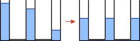

Money Balancing Math
Occasionally situations arise where multiple parties are paying different amounts for various "shared" items (could be dishes for a dinner, or groceries and meals for a vacation) and at the end everyone wants to make sure that no one party paid more than everyone else. I'll refer to these situations as the "money balancing" problem, which can be stated more precisely as follows:
The Money Balancing Problem
Given \(n\) parties that have paid \(c_1,c_2,\cdots,c_n\) amounts toward a shared fund with a mean value of \(\mu\triangleq \sum_i{c_i}/n\), determine the minimal exchanging of funds that must occur between parties after the fact to ensure that \(c_i\rightarrow\mu\) for all \(i\).
For small party sizes, the solutions to this problem are pretty intuitive (I'll explain why that is). Some illustrative examples:
Example: (\(n=2\))
- Party 1 pays $20
- Party 2 pays $10
The mean amount is $15, and to make everyone whole Party 2 must pay Party 1 $5.
Example: (\(n=3\))
- Party 1 pays $4
- Party 2 pays $5
- Party 3 pays $6
The mean amount is $5, and to make everyone whole Party 1 must pay Party 3 $1. Part 2 doesn't have to do anything.
The above examples with \(n<4\) are quick to reason through to get to the minimal list of needed transactions to make everyone whole. This is because of a convenient fact: that no matter how large \(n\) is, the total amount that was paid above the mean \(\mu\) is perfectly balanced by the total amount that was paid below the mean. In case that fact isn't intuitive to you, see the proof below.
Proof
\(\sum_i{\left(\mu-x_i\right)}\)
\(=\sum_i{\left(\left(\frac{1}{n}\sum_j{x_j}\right)-x_i\right)}\)
\(=n\sum_i{\left(\left(\sum_j{x_j}\right)-nx_i\right)}\)
\(=n\left(n\sum_i{x_i}-n\sum_i{x_i}\right)\)
\(=0\)
Thus, when \(n<4\), there is a finite amount of cases to consider, each with an obvious optimal solution:
- \(n=2\)
- Case 1: \(x_1=x_2=\mu\) \(\rightarrow\) No one does anything.
- Case 2: \(x_1<\mu,x_2>\mu\) \(\rightarrow\) Party 1 pays Party 2 exactly \(\mu-x_1\).
- \(n=3\)
- Case 1: \(x_1=x_2=x_3=\mu\) \(\rightarrow\) No one does anything.
- Case 2: \(x_1<\mu,x_2<\mu,x_3>\mu\) \(\rightarrow\) Party 1 pays Party 3 \(\mu-x_1\) and Party 2 pays Party 3 \(\mu-x_2\).
- Case 3: \(x_1<\mu,x_2=\mu,x_3>\mu\) \(\rightarrow\) Party 1 pays Party 3 \(\mu-x_1\).
- Case 4: \(x_1<\mu,x_2>\mu,x_3>\mu\) \(\rightarrow\) Party 1 pays Party 2 \(\mu-x_2\) and pays Party 3 \(\mu-x_3\).
It's when \(n>=4\) that things start to get a little hairier, since now we open ourselves to the possibility of simultaneously having multiple people pay below and above the mean. In that case, there are now an infinite number of a posteriori transactions that could take place to make each other whole, but we'd like to know the optimal set of transactions that entails a minimal amount of money exchanging hands.
A neat visualization of this optimal solution is to picture \(n\) water columns with different heights, initially segregated from each other (imagine connecting pipes with negligible cross-sectional area) by closed valves. Once the valves open, the water will auto-distribute itself to make it so that all the column heights regress to the mean. And if the connecting pipes have a small enough cross-section, then the inter-column transfer will be slow enough that the water will seamlessly transfer between columns in an optimal fashion such that no unnecessary water molecules are moved:

The same effect can be achieved for arbitrary values of \(n\) by formulating a constrained linear program where we minimize the sum of all balancing a posteriori transactions and constrain each party sum (i.e., initial amounts spent \(x_i\) plus any balancing transactions for each respective party) to be equal to \(\mu\). Since computers can solve linear programs in their sleep, here's a Python script that will:
- Prompt you for party info and how much they spent toward the "shared fund."
- Formulate and solve the linear program from the info you provided.
- Report the results in a human-understandable fashion.
import numpy as np
from scipy.optimize import linprog
party_names = []
party_expenses = []
# Get party info
n = 0
while True:
party_name = input(f"Enter the name of Party {n+1} (ENTER to stop adding parties): ")
if not party_name:
break
n += 1
party_expense = None
while party_expense is None:
try:
party_expense = float(input(f"Enter total expense amount of Party {n}: "))
except:
print("Must enter a valid, positive floating-point number.")
if party_expense <= 0:
print("Must enter a valid, positive floating-point number.")
party_expense = None
party_names.append(party_name)
party_expenses.append(party_expense)
if n <= 1:
print("Must input more than one party.")
exit()
# Formulate and solve linear program
b_p = np.array(party_expenses)
mu = np.mean(b_p)
b_eq = mu - b_p[:-1]
m = n * (n - 1)
m2 = int(m / 2)
b_ub = np.zeros(m)
indices = [(source, sink) for source in range(n) for sink in range(n) if source > sink]
c = np.zeros(m)
for i in range(m2):
c[m2 + i] = 1.0
A_eq = np.zeros((n - 1, m))
for i in range(n - 1):
for j, (source, sink) in enumerate(indices):
if source == i:
A_eq[i, j] = -1
elif sink == i:
A_eq[i, j] = 1
A_ub = np.zeros((m, m))
for i in range(m2):
A_ub[2 * i, i] = 1.0
A_ub[2 * i, m2 + i] = -1.0
A_ub[2 * i + 1, i] = -1.0
A_ub[2 * i + 1, m2 + i] = -1.0
x_bounds = []
for i in range(m2):
x_bounds.append((None, None))
for i in range(m2):
x_bounds.append((0, None))
res = linprog(c, A_eq=A_eq, b_eq=b_eq, A_ub=A_ub, b_ub=b_ub, bounds=x_bounds)
# Interpret and report results
print("----")
for i in range(m2):
amount = round(res.x[i], 2)
if abs(amount) >= 0.01:
source, sink = indices[i]
if amount > 0:
print(f"{party_names[sink]} should pay {party_names[source]} ${amount:.2f}.")
else:
print(f"{party_names[source]} should pay {party_names[sink]} ${-amount:.2f}.")
Here's an example run of the above program with user inputs from \(n=5\):
Enter the name of Party 1 (ENTER to stop adding parties): Jerry
Enter total expense amount of Party 1: 9.20
Enter the name of Party 2 (ENTER to stop adding parties): Joe
Enter total expense amount of Party 2: 10.12
Enter the name of Party 3 (ENTER to stop adding parties): John
Enter total expense amount of Party 3: 2.30
Enter the name of Party 4 (ENTER to stop adding parties): Jeff
Enter total expense amount of Party 4: 3.55
Enter the name of Party 5 (ENTER to stop adding parties): Jim
Enter total expense amount of Party 5: 7.89
Enter the name of Party 6 (ENTER to stop adding parties):
----
John should pay Jerry $1.43.
John should pay Joe $2.26.
Jeff should pay Jerry $1.16.
Jeff should pay Joe $1.25.
John should pay Jim $0.62.
Jeff should pay Jim $0.66.